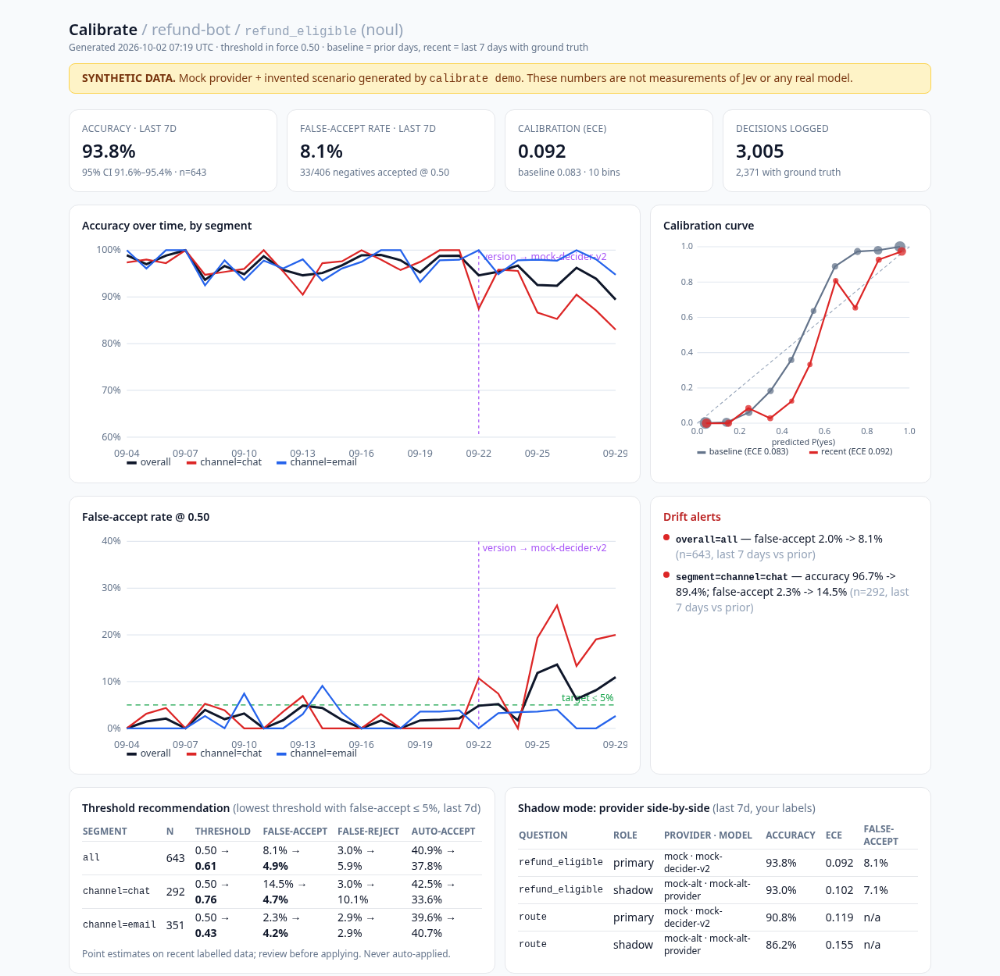

For teams shipping Jev, OpenAI Decisions, and other typed decision APIs
Calibrate logs every typed decision your app makes, joins it to what actually happened, and alerts you when accuracy, calibration, or your false-accept rate slips — by segment and by model version. Then it tells you which threshold to use now.
Not live yet. Founding customers get a full refund if it doesn't ship by December 1, 2026.
Decision models return a probability, and your code acts on it above a threshold. That threshold silently goes stale when your inputs, segments, or the model version change. Public evidence from the last three weeks:
known failure modes listed in TypeSafe's own Jev 1.13 docs, including adversarial content, large state, and the warning not to carry a threshold tuned on a Noul over to a Choice.
docs.typesafe.ai — Jev 1.13 jaggednessof decisions flipped by appending a single unverified opinion to the state, on jev-1.13.0 (JevAdvBench, 95% interval 8.5–15.5%).
arXiv 2609.31142RLCDAlignBench: Jev's probabilities rank well, but thresholds fitted on one dataset don't carry over to another; a handful of local labels fixes much of it.
arXiv 2609.29429false-admission rate (47 of 148 negatives) Jason Lemkin reported when trying Jev for SaaStr Connect — the number that made him stop.
Jev News report of his Sep 19 postTypeSafe's own customer agreement says the customer "is responsible for independently evaluating the output" (MCA §9.3). CI tests catch regressions before you ship. Calibrate watches what happens after.
A thin SDK records each typed answer: question hash, choice / score / noul, probability, confidence, resolved model version, threshold in force, and your segment tags. State is hashed, not stored, by default. Your provider API key never leaves your process.
Refund approved? Ticket reopened? Lead converted? Post outcomes by webhook or upload a CSV days later. Calibrate joins them to the original decisions.
Live accuracy, calibration curves (ECE), false-accept / false-reject rates, and drift by segment and model version. When something slips: an alert, plus the threshold that meets your stated false-accept bar. Optional shadow mode runs the same traffic through a second provider so you can compare.
from calibrate import Monitor
mon = Monitor("calibrate.db") # uses TYPESAFE_API_KEY if set, a mock provider otherwise
res = mon.decide(state, {"refund_eligible": {"type": "noul", "instructions": "Is this refund eligible under `policy`?"}},
model="jev-1.13.0", segment="channel=chat", thresholds={"refund_eligible": 0.7})
# days later, when you know the truth:
mon.record_outcome(res["decision_id"], "refund_eligible", "no")That's the working prototype API. The hosted version adds the webhook, alerts to Slack/email, and a team dashboard.
A screenshot of the working prototype. The data in it is synthetic: a mock provider and an invented refund-bot scenario, not measurements of Jev or any real model.

CI and calibration scripts (jevcal, jevkit-calibrate, regression suites) check a frozen labelled set before deploy. They're useful, and they don't see what production inputs do next week.
LLM tracing tools trace prompts and spans and score text. Typed decisions need reliability diagrams, false-accept rates at the threshold you actually use, and per-question threshold advice.
Enterprise ML monitoring (Arize, Fiddler) can chart classifier calibration, and they're good. They're built around generic model and feature schemas and enterprise rollouts. Calibrate is built around one call carrying many typed questions, question versions, and provider model aliases.
Multi-provider by design. Jev today, OpenAI's Decisions API when its preview opens up, and Jev-compatible endpoints. Compare them on your own traffic and your own labels.
The first 3 months of the Team plan for $99 total, instead of $99/month. Limited to founding customers. You're paying for early access and a direct line to shape the roadmap, not for something that already exists.
Refund guarantee: if the hosted Team plan isn't available to you by December 1, 2026, you get a 100% refund. You can also ask for a full refund any time before you start using it. Email tstockham96@gmail.com.
A working prototype exists: an SDK that logs to SQLite, CSV outcome ingestion, and the static dashboard shown above. The hosted product (webhooks, alerts, team dashboard) is what you're pre-ordering. Target date is December 1, 2026, with a refund if it slips.
No. The SDK runs in your process with your own key and sends Calibrate only decision metadata. Provider terms generally say not to share credentials, so we designed around that. If you want a proxy, it runs self-hosted in your infrastructure.
By default: a hash of the state, the question definition hash, the typed answer, probability/confidence, model version, threshold, timestamp, your segment tags, and the outcomes you send. Raw state is opt-in (for debugging specific misses).
No. Calibrate privately monitors your decisions against your outcomes, inside your workspace. We don't publish leaderboards, and we don't train models on anyone's provider output.
You rarely do. Label-free signals (probability-distribution drift, PSI, confidence shifts, model-version changes) alert early. Partial or delayed labels (a reviewed sample, reopened tickets, chargebacks) drive the accuracy and false-accept metrics, which are always shown with sample sizes.
TypeSafe Jev first (the documented /v1/systemone shape). OpenAI Decisions once its schema is public; it's in limited preview today. Then any Jev-compatible endpoint. Shadow mode compares them on the same traffic.
No. Calibrate is independent. Jev is a product of TypeSafe AI, Inc.
Tell us what you're deciding and we'll invite you to the beta. No spam; one email when there's something to try.